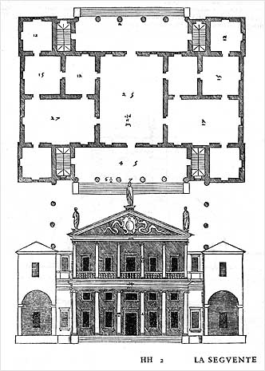

Introduction
Villa Valmarana (also known as Valmarana Scagnolari Zen) is a Renaissance villa in the province of Vicenza. It is one of the many villas designed by Andrea Palladio and described in his famous book collection "I Quattro Libri dell'Architettura" (The Four Books of Architecture) published in 1570.
The villa, as of today, is quite different from the one that Palladio designed for Gianfrancesco Valmarana, around 1563: as can be seen from the image (on the right) it shows a structure with double-storey loggias, enclosed by small towers on both fronts. The project, as intended, was never completed because the build works were interrupted in 1566 by the death of Gianfrancesco and were probably concluded by his nephew Leonardo (the heir of the family) probably using less funds. The second storey of loggias was never constructed and the middle section was terminated with some sort of attic.
Unfortunately the villa was almost destroyed by bombardment during World War II and then recently reconstructed with some modifications.
The villa, after the latest reconstruction, is quite different from what Palladio had in mind: while the ground floor is mostly the same in respect of the original project, the top (and last floor) is totally different. In additon some extra structure (that is partially in ruins) has been added on the back of the villa (a wing facing north) and a wall divides the front area, with the garden, from the back one that is inaccessible to the public.
General description of the project

Reproducing the villa in 3D, whetever as of today or as of the original project, is quite impossible: lack of documentation makes improbable the definition of a coherent structure to implement and show. Infact the original project consist of only two projections (front and basement) and of the today structure there is an abundance of photo shoots of the front area of the villa (that is publicy accessible) but none of the other parts (that are inaccessible to the public).
The first step was to gather all the possible documentation to make an informed decision on how to develop the whole project: after gathering a pletora of images I decided to build a hybrid between the original Palladio project and the villa as it is today. It was decided to proceed as follow:
- gather the finest documentation on the front section of the villa (the south entrance in the aerial photo) and one of the two sides (the east one);
- use the original Palladio project to design the missing sides (using as basis the villa as of today);
- remove the post War World II additions (the garden wall and the partially demolished north wing).
Hierarchical decomposition
The hierarchical decomposition of the villa was done with a top-down approach.
Using the approach wrote in the above section the villa was divided in 3 main parts:
Besides the decomposition, to found a viable scale usage of aerial images was employed.
Facade
Side Wall
Roof
Conclusion
Eget feugiat est leo tempor quam. Ut quis neque convallis magna consequat molestie.
Sed sodales nisl sit amet augue. Donec ultrices, augue ullamcorper posuere laoreet, turpis massa tristique justo, sed egestas metus magna sed purus.

{kind=link}
{kind=link}
{kind=link}
{kind=link}
{kind=link}
{kind=link}
{kind=link}